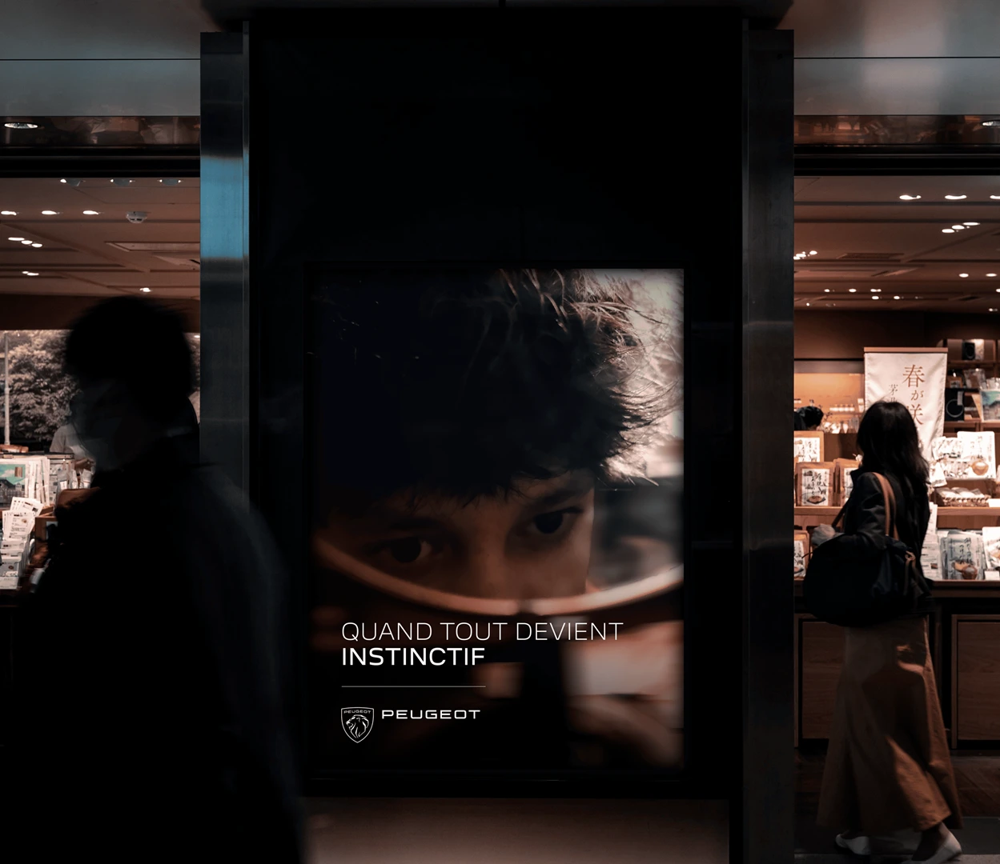
Quand tout devient Instinctif
Direction artistique · Branding · Campagne · Print · Digital · Vidéo · Shooting
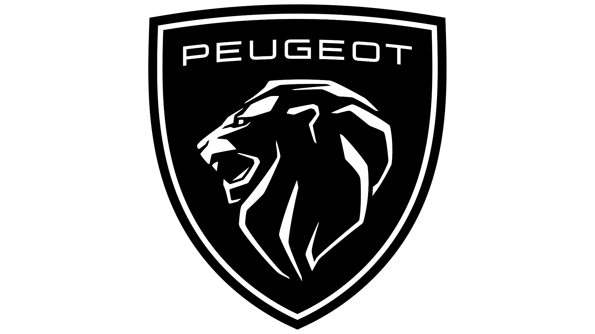
ClientPeugeot
Imaginée pour Peugeot, cette campagne repose sur une idée simple : faire émerger la marque sans jamais montrer la voiture. À travers une série de gestes et de perceptions du quotidien, chaque visuel détourne un objet ou une situation pour évoquer subtilement un élément de conduite.
Le projet se développe comme un ensemble cohérent de visuels de campagne, d’un film et de déclinaisons print. Chaque pièce joue sur la reconnaissance instinctive et sur la force de l’association visuelle, afin d’installer une présence de marque immédiate, intrigante et mémorable.
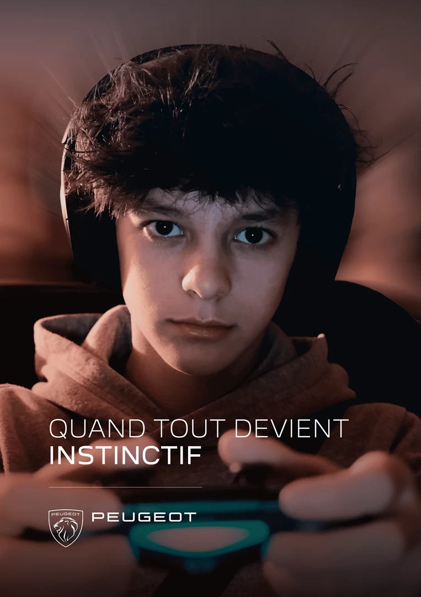
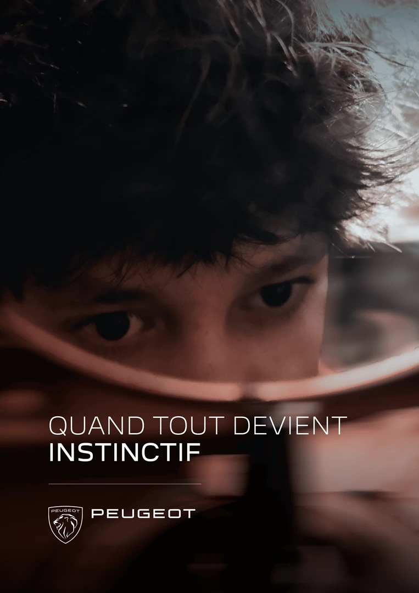
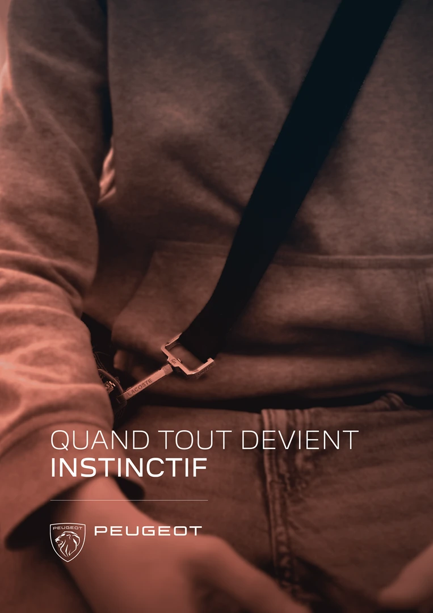
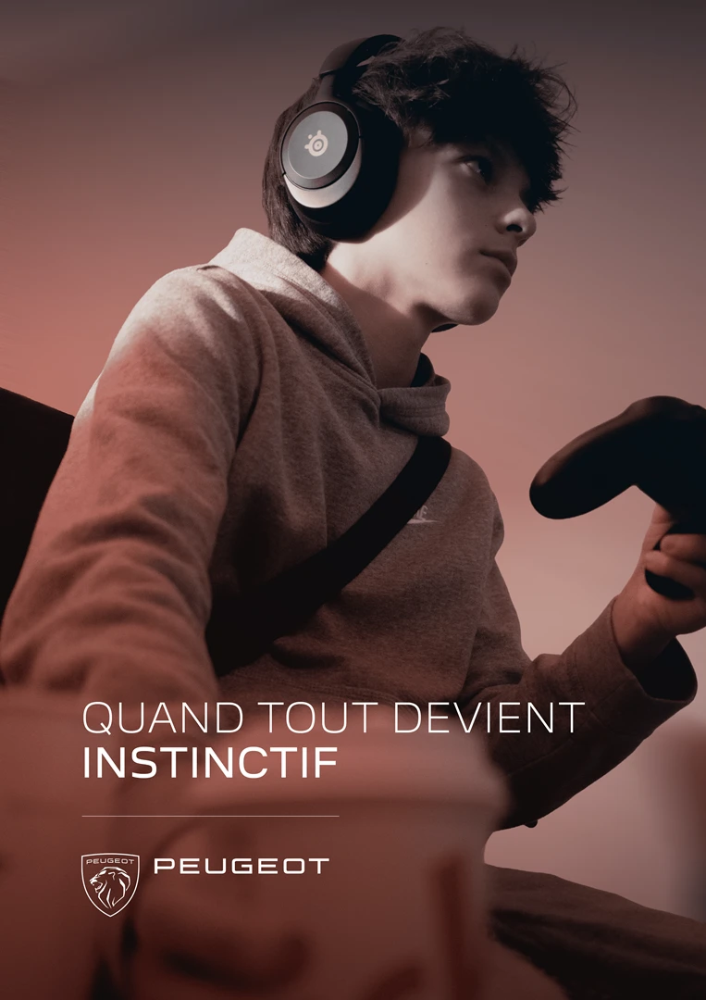
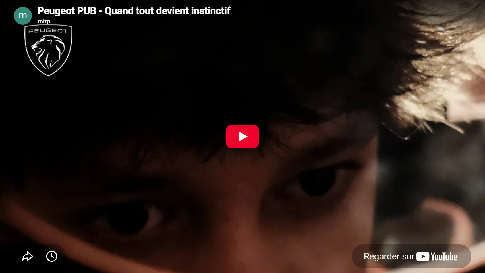
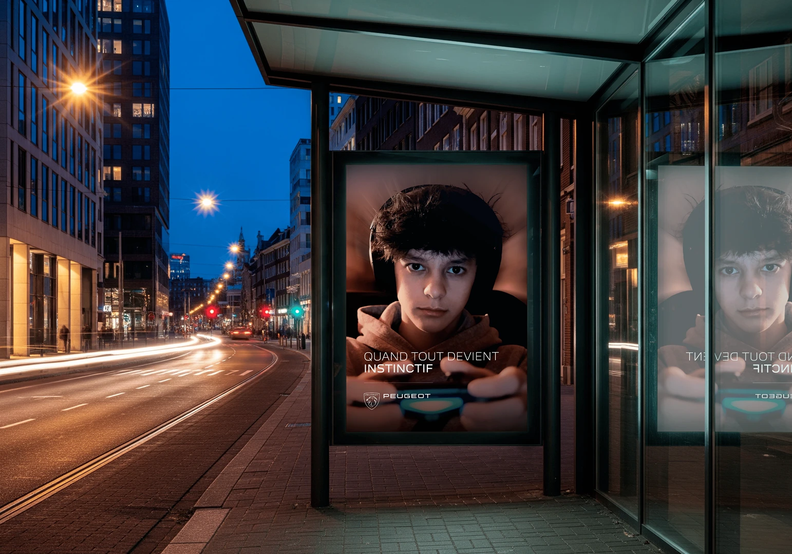
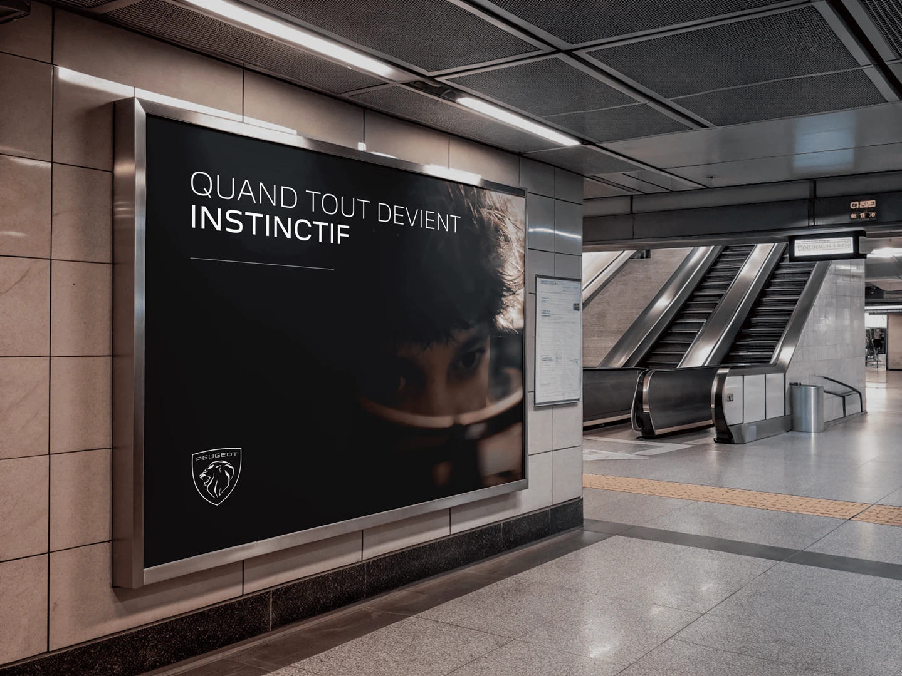
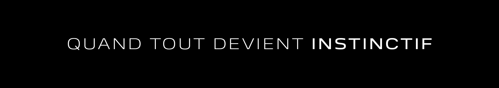
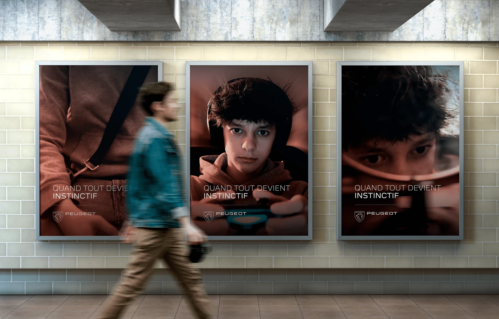